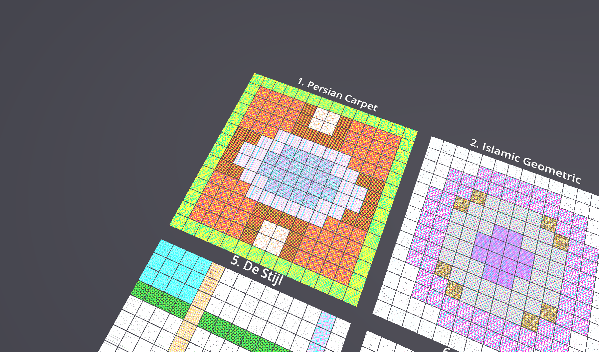

Front perspective — compositions as floor tiles

Carpet preset close-up — border, gutter, field, medallion
March 14, 2026
Yesterday we built a reusable Spatial Composition System — CSS grid thinking for VR pattern arrangement. Today we stress-tested it with 20 composition presets drawn from art history traditions spanning five continents and three millennia.
Each preset maps a different cultural pattern tradition into the same zone-based system. Persian carpets and Aztec calendars, Celtic knots and Kente cloth — all rendered through the same eight region primitives and four modifiers.

The gallery from above — each tile is an entire composition with its own zone structure, wallpaper groups, and palettes. 3,920 shader quads total.
Front perspective — compositions as floor tiles
Carpet preset close-up — border, gutter, field, medallion
All eight region types appear across the 20 presets:
FILL BORDER RECT ELLIPSE CORNERS STRIPE COLUMNS RING
Each modifier gets exercised:
kaleidoscope — Persian Carpet, Islamic Geometric, Chinese Lattice, Gothic Rose, Zellige, Victorian Tilemirror_x — Art Deco, Palazzo Floormirror_y — Navajo Weaving, Palazzo Floorrotate_180 — BauhausFrom 7 zones (Islamic Geometric — clean rings) to 100+ zones (Pixel Quilt — every 2×2 block is its own zone). Sashiko creates 22+ stripe zones. Mud Cloth generates 30+ symbolic blocks. The system handles all of them through the same priority-ordered hit-testing.
Complex overlap hierarchies: the Persian Carpet layers 10 zones from priority 0 (field) to priority 30 (medallion). The Aztec Calendar stacks 6 rings with cardinal markers at priority 40 punching through all layers. The Gothic Rose alternates tracery (priority 15) and glass (priority 20+) in concentric bands.

Carpet preset — 6 zones visible as distinct patterns

Shader arch gallery — 400 unique tile cubes
The same eight region primitives that describe a Persian carpet also describe a Gothic rose window. The difference isn’t in the system — it’s in how zones are arranged. Layout is a universal language.
# Any art history preset via pattern_compositor
pattern_compositor#preset:persian_carpet#width:24#height:32
# The full gallery of all 20
art_history_gallery#columns:5#tile_resolution:14
# Or build your own composition in code
var comp = ArtHistoryPresets.gothic_rose(24, 24)
var zone = comp.resolve_zone(12, 12) # → "oculus"These 20 presets prove the composition system is genuinely content-agnostic. The same SpatialComposition that renders wallpaper group shaders on a virtual carpet could drive architectural element placement on a facade, or widget layout on a control board. The region primitives and modifiers are universal — what changes is only what each zone contains.